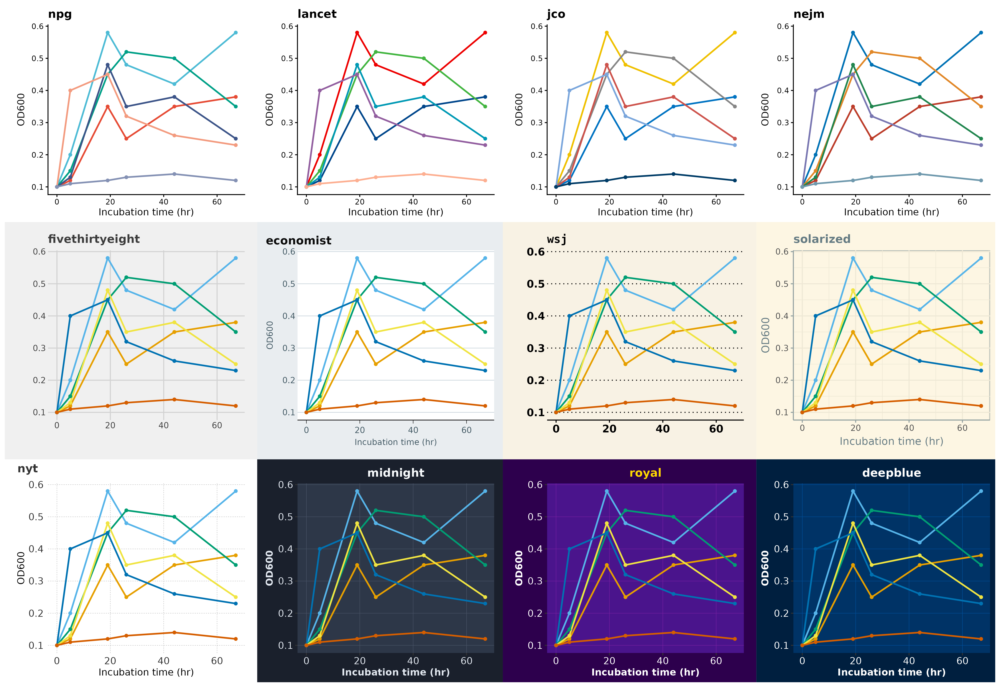
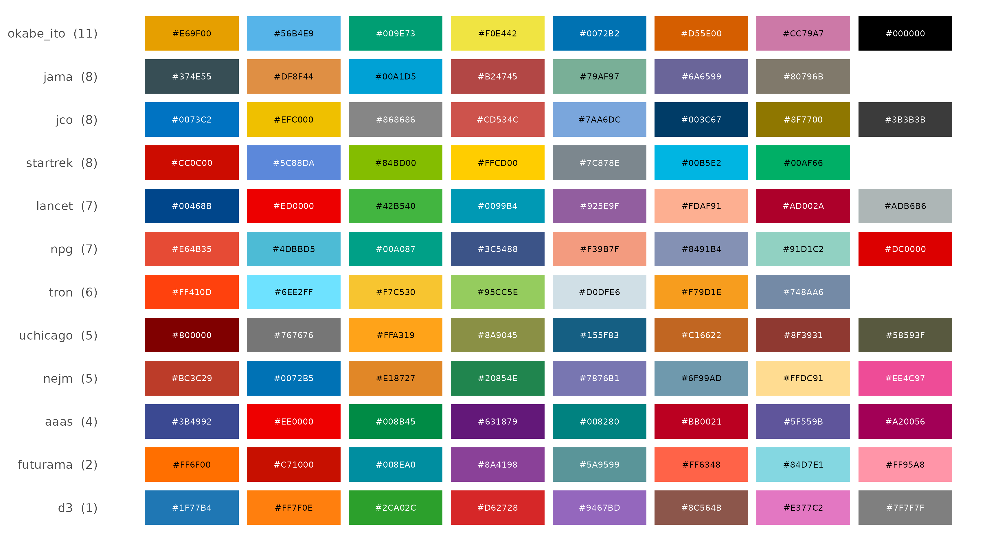
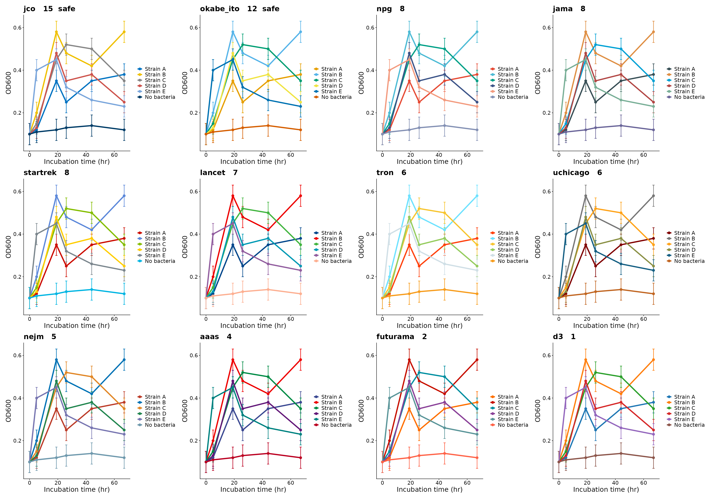
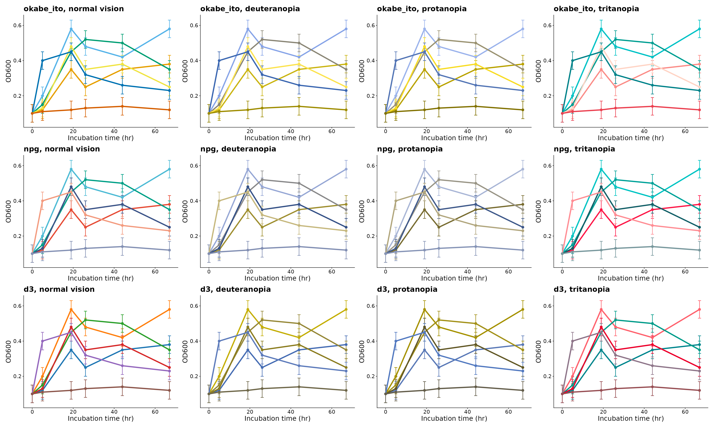
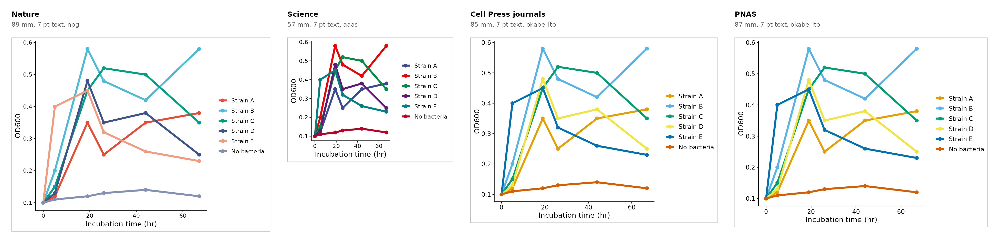

One plot of the simulated growth data, drawn with the theme sets, the
palettes and the journal templates of themeset. Each
section shows the call that makes it.
library(ggplot2)
library(themeset)
has_patchwork <- requireNamespace("patchwork", quietly = TRUE)
has_colorspace <- requireNamespace("colorspace", quietly = TRUE)
od <- subset(example_growth(), measure == "OD600")
p <- ggplot(od, aes(time, value, color = strain)) +
geom_line(linewidth = 0.9) +
geom_point(size = 1.4) +
labs(x = "Incubation time (hr)", y = "OD600", color = NULL)Twelve Theme Sets
Journal styles on white, news and magazine styles with their own
background, and the three dark themes of themeset, which
suit slides. The journal sets bring their own palette. Most of the other
sets change only the theme, and fivethirtyeight has a
palette of three colors, too few for six groups, so these copies use the
Okabe-Ito palette, which has a color for each group.
with_palette <- c("npg", "lancet", "jco", "nejm")
sets <- c(with_palette, "fivethirtyeight", "economist", "wsj", "solarized",
"nyt", "midnight", "royal", "deepblue")
panels <- lapply(sets, function(set) {
styled <- apply_theme_set(p, set)
if (!set %in% with_palette) styled <- styled + scale_color_set("okabe_ito")
styled +
labs(title = set) +
theme(legend.position = "none", plot.title = ggtext::element_markdown(size = 13, face = "bold"))
})
patchwork::wrap_plots(panels, ncol = 4)
One set for one plot, or for the whole session:
apply_theme_set(p, "midnight")
set_global_theme("npg")Palettes for Readers with Color-Vision Deficiency
compare_palettes() gives, for each palette, the distance
between its two closest colors in CIEDE2000, with normal vision and with
three simulated deficiencies. The bars below show the worst of the four;
at 10 or more the colors are easy to tell apart.
palettes <- c("okabe_ito", "npg", "aaas", "nejm", "lancet", "jama", "jco",
"d3", "futurama", "startrek", "tron", "uchicago")
scores <- compare_palettes(palettes, n = 8)
scores <- scores[order(scores$worst), ]
swatches <- do.call(rbind, lapply(scores$set, function(set) {
colors <- unname(scale_color_set(set)$palette(8))
colors <- colors[!is.na(colors)][seq_len(min(8, sum(!is.na(colors))))]
data.frame(set = set, position = seq_along(colors), color = substr(colors, 1, 7))
}))
labels <- sprintf("%s (%.0f)", scores$set, scores$worst)
swatches$set <- factor(swatches$set, levels = scores$set, labels = labels)
light <- farver::convert_colour(farver::decode_colour(swatches$color), "rgb", "lab")[, 1] > 60
ggplot(swatches, aes(position, set, fill = color)) +
geom_tile(width = 0.92, height = 0.8) +
geom_text(aes(label = color), size = 2.6, color = ifelse(light, "black", "white")) +
scale_fill_identity() +
scale_x_continuous(breaks = NULL) +
labs(x = NULL, y = NULL) +
theme_minimal(base_size = 13) +
theme(panel.grid = element_blank())
knitr::kable(scores[order(-scores$worst), c("set", "n", "normal", "deutan", "protan", "tritan", "worst")],
digits = 1, row.names = FALSE)| set | n | normal | deutan | protan | tritan | worst |
|---|---|---|---|---|---|---|
| okabe_ito | 8 | 21.7 | 11.5 | 12.3 | 11.1 | 11.1 |
| jama | 7 | 21.7 | 11.1 | 11.8 | 7.7 | 7.7 |
| jco | 8 | 17.9 | 7.7 | 14.3 | 14.9 | 7.7 |
| startrek | 7 | 15.9 | 9.8 | 7.5 | 9.0 | 7.5 |
| lancet | 8 | 17.3 | 7.1 | 12.4 | 7.5 | 7.1 |
| npg | 8 | 9.3 | 6.9 | 9.9 | 7.9 | 6.9 |
| tron | 7 | 14.2 | 6.0 | 6.0 | 10.4 | 6.0 |
| uchicago | 8 | 10.3 | 5.5 | 4.8 | 9.8 | 4.8 |
| nejm | 8 | 18.0 | 8.9 | 4.5 | 8.8 | 4.5 |
| aaas | 8 | 7.6 | 4.8 | 4.8 | 3.6 | 3.6 |
| futurama | 8 | 7.5 | 5.5 | 7.1 | 2.1 | 2.1 |
| d3 | 8 | 16.2 | 4.8 | 1.4 | 9.6 | 1.4 |
Any of these palettes, by name:
p + scale_color_set("okabe_ito")One Figure, Twelve Palettes
The same figure, the growth curves with their error bars in the theme of Nature, with only the palette changed. The panels are sorted by the distance between the two closest of the six colors that the figure uses: the score depends on the number of groups, so a palette that ranks high for eight colors can rank lower for six, and the other way around.
fig <- ggplot(od, aes(time, value, color = strain)) +
geom_errorbar(aes(ymin = value - se, ymax = value + se), width = 1.5, linewidth = 0.4) +
geom_line(linewidth = 0.9) +
geom_point(size = 1.6) +
scale_x_continuous(breaks = seq(0, 60, 20)) +
labs(x = "Incubation time (hr)", y = "OD600", color = NULL) +
journal_theme("nature") +
theme(text = element_text(size = 10), axis.text = element_text(size = 8),
legend.text = element_text(size = 8), legend.key.size = unit(3, "mm"))
six <- compare_palettes(palettes, n = 6)
six <- six[order(-six$worst), ]
swapped <- Map(function(set, score) {
fig + scale_color_set(set) +
labs(title = sprintf("%s %.0f%s", set, score, if (score >= 10) " safe" else "")) +
theme(plot.title = element_text(size = 11, face = "bold"))
}, six$set, six$worst)
patchwork::wrap_plots(swapped, ncol = 4)
As Readers with Color-Vision Deficiency See It
Three of the palettes, with normal vision and as simulated for deuteranopia, protanopia and tritanopia with the colorspace package. With d3 and npg some strains turn into the same olive or blue, and the reader can no longer match a line to the legend; Okabe-Ito keeps the six lines apart.
simulate <- list(
"normal vision" = identity,
deuteranopia = colorspace::deutan,
protanopia = colorspace::protan,
tritanopia = colorspace::tritan
)
seen <- list()
for (set in c("okabe_ito", "npg", "d3")) {
colors <- unname(scale_color_set(set)$palette(6))[1:6]
for (vision in names(simulate)) {
seen[[length(seen) + 1]] <- fig +
scale_color_manual(values = simulate[[vision]](colors)) +
labs(title = paste0(set, ", ", vision)) +
theme(plot.title = element_text(size = 11, face = "bold"), legend.position = "none")
}
}
patchwork::wrap_plots(seen, ncol = 4)
To score the palettes for the number of groups of your own figure, and to switch a figure to Okabe-Ito only when its colors are too close:
compare_palettes(c("jco", "okabe_ito", "npg", "d3"), n = 6)
journal_fix(fig + scale_color_set("d3"), "nature", fix = "colors")One Plot in Four Journals
compare_journals() draws the plot at the width of a
single column of each journal, with 7 pt text and the palette of the
journal, side by side and to scale. The narrow column of Science leaves
the least room for the data.
page <- compare_journals(p, c("nature", "science", "cell", "pnas"), sheet_mm = 400)
size <- attr(page, "size_mm")
page
The article Comparing Figures Across Journals explains the templates, and how to check and repair a figure for a journal.